Snakes of Guinea-Bissau
38 living snake species are recorded in Guinea-Bissau in SnakeList: 14 venomous and 24 non-venomous, from 9 families.
- 38living species
- 9families
Danger to people · tap a number to show only those snakes
Harmful = dangerously venomous + giant constrictors. HarmlessLow risk = not venomous and not a giant constrictor. Mildly venomous snakes have no serious bites to people documented. Any snake can bite.
These totals count the unique living snake species SnakeList records in Guinea-Bissau. A species counts if it is recorded anywhere in the country, so not every snake lives in every part of it.
In SnakeList’s checklist filters
How many of the 38 living species here each filter in the SnakeList app picks out – tap a number to show only those snakes.
Snake family5 types, 9 families
Type
Family
Habitats14 habitat groups
Habitats are estimated from where each snake is recorded and what kind of snake it is, as in SnakeList; a snake can count in several.
Characteristics14 venomous, 2 constrictors
Constrictor and Non-constrictor count only snakes whose family or genus is documented as constricting or not; the rest are not documented.
Other filters5 popular, 5 rare
- 0extinct
Species
Showing 38 species
 African Rock PythonPython sebae
African Rock PythonPython sebae Angolan Garter SnakeElapsoidea semiannulata
Angolan Garter SnakeElapsoidea semiannulata Ball PythonPython regius
Ball PythonPython regius Black MambaDendroaspis polylepis
Black MambaDendroaspis polylepis Black-lined Green SnakeHapsidophrys lineatus
Black-lined Green SnakeHapsidophrys lineatus Black-necked Spitting CobraNaja nigricollis
Black-necked Spitting CobraNaja nigricollis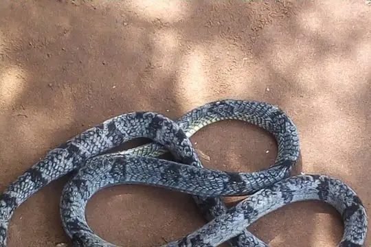
Blandings Tree SnakeToxicodryas blandingii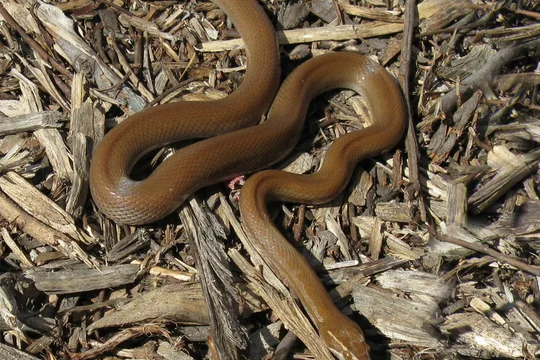
Brown House Snake (fuliginosus)Boaedon fuliginosus Common Egg EaterDasypeltis scabra
Common Egg EaterDasypeltis scabra Confusing Egg EaterDasypeltis confusa
Confusing Egg EaterDasypeltis confusa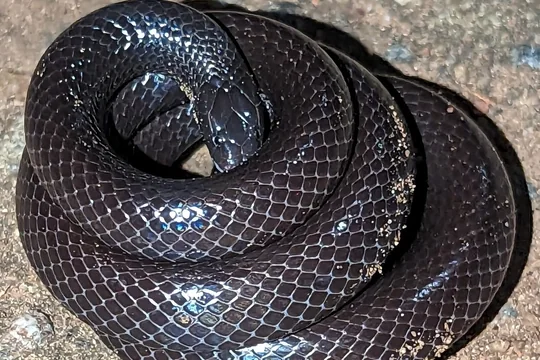
Dull Purple-glossed SnakeAmblyodipsas unicolor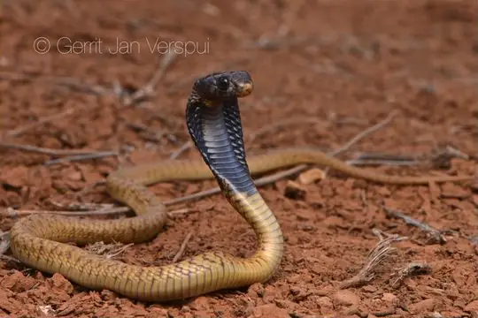
Egyptian CobraNaja haje Elegant Sand RacerPsammophis elegans
Elegant Sand RacerPsammophis elegans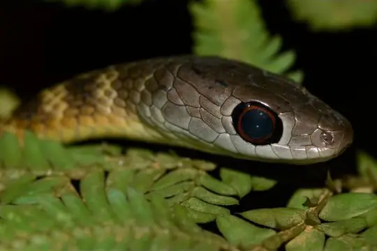
Emerald Green SnakePhilothamnus heterodermus Emerald SnakeHapsidophrys smaragdinus
Emerald SnakeHapsidophrys smaragdinus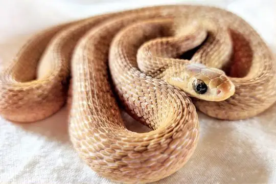
Gans' Egg EaterDasypeltis gansi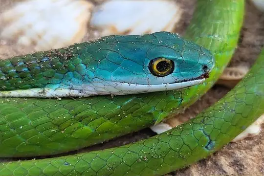
Irregular Green SnakePhilothamnus irregularis Kirtland's Twig SnakeThelotornis kirtlandii
Kirtland's Twig SnakeThelotornis kirtlandii Lined Olympic SnakePsammophis lineatus
Lined Olympic SnakePsammophis lineatus Mole Viper (aterrima)Atractaspis aterrima
Mole Viper (aterrima)Atractaspis aterrima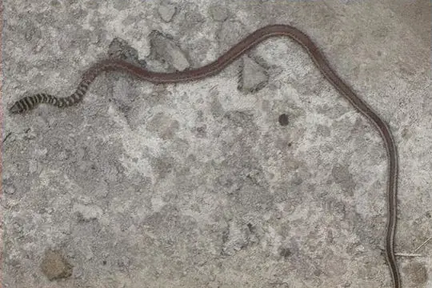
Ornate Olympic SnakePsammophis praeornatus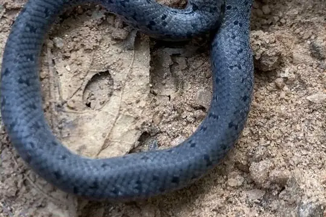
Pale Wolf SnakeLycophidion irroratum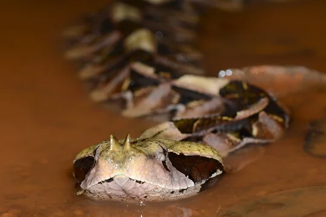
Rhinoceros ViperBitis rhinoceros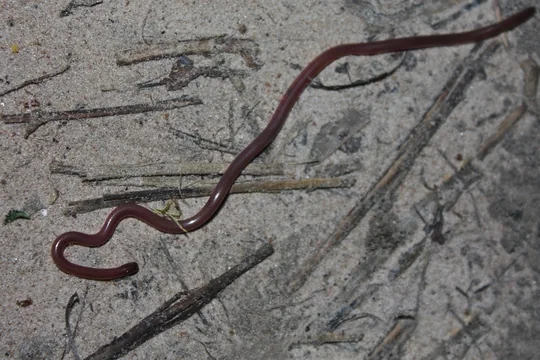
Sahel Thread SnakeMyriopholis narirostris- No photo yetSavanna Lesser File SnakeGonionotophis grantii
- No photo yetSenegalese CobraNaja senegalensis
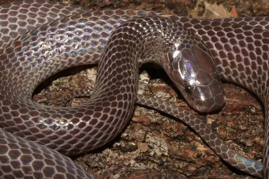
Small-eyed File SnakeMehelya stenophthalmus Smith's African Water SnakeGrayia smithii
Smith's African Water SnakeGrayia smithii Spotted Blind SnakeAfrotyphlops punctatus
Spotted Blind SnakeAfrotyphlops punctatus Spotted Wolf SnakeLycophidion albomaculatum
Spotted Wolf SnakeLycophidion albomaculatum Striped House SnakeBoaedon lineatus
Striped House SnakeBoaedon lineatus Striped Sand SnakePsammophis sibilans
Striped Sand SnakePsammophis sibilans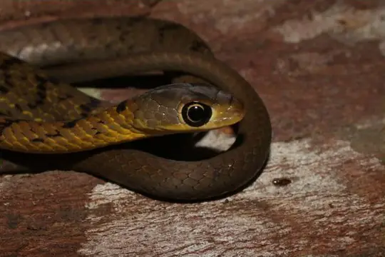
Thirteen-scaled Green SnakePhilothamnus carinatus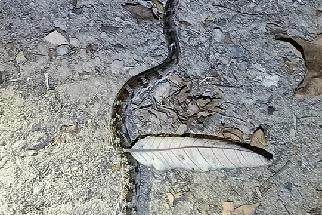
Variable Cat SnakeTelescopus variegatus- No photo yetVilliers' Blind SnakeRhinoleptus koniagui
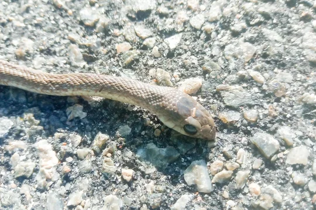
Western Beaked SnakeRhamphiophis oxyrhynchus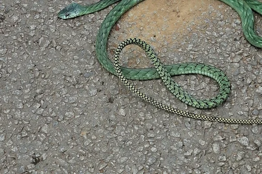
Western Green MambaDendroaspis viridis Lycophidion semicinctum
Lycophidion semicinctum
No snakes in Guinea-Bissau match.
Guinea-Bissau’s snakes in numbers
- Families: Colubridae 12, Lamprophiidae 7, Elapidae 6, Psammophiidae 5, Atractaspididae 2, Leptotyphlopidae 2, Pythonidae 2, Typhlopidae 1, Viperidae 1.
How precisely they are recorded
Of the 38 living species recorded in Guinea-Bissau, 2 are recorded by region in SnakeList’s data; 36 are recorded only for Guinea-Bissau as a whole, so the region pages list them as possible rather than recorded. SnakeList records each species by region, not by exact spot, so a species listed for a region may live in only part of it.
Regions
The regions where SnakeList records snakes, with how many living species are recorded in each. Each page has its species, venomous snakes, families, the species found only there, its cities and neighbours.